Best Employee Monitoring Software: 10 Tools Compared
Employee monitoring software records activity on company devices and accounts, then turns that record into reports a manager can read: applications opened, sites visited, hours logged, sometimes screenshots or keystrokes. The ten products below are the ones a buyer in this market keeps running into, and they are not variations on a single idea. A shift scheduler that logs location and an endpoint agent that feeds a SIEM are solving different problems for different departments. Buying the wrong kind is the most common and most expensive mistake in this category.
So this page sorts them by the question each one answers, and is direct about where each falls short. It also covers three things most comparisons skip: what US notice law requires before you switch anything on, what employees say about being monitored in survey data, and how to run an evaluation yourself rather than taking anyone's word for it, this page included.
If you want a page that declares a single winner, this is not it. The right tool here depends entirely on what you are trying to find out, and any list naming one champion is describing its own scoring method rather than your situation. One disclosure before we start: we take no vendor money, run no affiliate links, and accept nothing for placement.
The 10 tools worth knowing
These are the ten worth knowing. The first three are starting points for the situations most buyers are in, and the remaining seven follow alphabetically. The numbers are positions in that order, not scores, because these tools are built for different jobs and ranking them on one scale would hide exactly the difference that matters.
If you want three to look at first, these cover the situations most buyers are actually in. Time Champ is the broadest of them. The other two are narrower buys, for a specific shape of team.
Time Champ
Desktop activity, automatic timesheets, project time, and live location for field staff in one platform, rather than two products side by side.
See the detailActivTrak
Reports at department level, for when the question is how a team spends its week rather than who logged in when.
See the detailConnecteam
Runs on a phone for staff who never sit at a company desktop, with scheduling and forms as the actual product.
See the detail- Controlio Positioned for small businesses wanting live desktop visibility on Windows
- DeskTime Positioned for small teams wanting time tracking without an IT project
- Intelogos Positioned for growing teams wanting analysis rather than raw logs
- Monitask Positioned for small and mid-sized remote teams wanting app and screen context
- Prodoscore Positioned for scoring activity from cloud accounts rather than endpoints
- Veriato Positioned for regulated industries treating this as a security function
- WebWork Time Tracker Positioned for remote teams that bill by the hour and need an activity record
Comparison at a glance
Read this to rule options out quickly rather than as a specification sheet. There is no pricing column, on purpose: rates here move, and vendors quote by seat count and contract length, so any figure printed on this page would be wrong for most readers. Read the last column first. Every product here carries a real tradeoff, and working out which one you can live with narrows the field faster than any feature list.
| Tool | Positioned for | Deployment | Where it falls short |
|---|---|---|---|
| Time Champ | One platform for desktop and field teams | Desktop agent, mobile app for field staff | Very broad capture that has to be configured down |
| ActivTrak | Mid-sized hybrid teams | Desktop agent, cloud reporting | Screen capture undercuts the aggregate reporting it sells |
| Connecteam | Shift and field workers | Mobile app on worker phones | Continuous location history on phones the employer does not own |
| Controlio | Small business desktop visibility | Windows agent, cloud console | Keystroke logging and a hidden agent are sold as features |
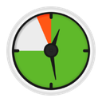 DeskTime | Small teams, light setup | Desktop app, cloud reporting | Screenshot and offline time behavior is poorly documented |
| Intelogos | Growing teams wanting analysis | Desktop agent, cloud reporting | Mobile coverage behind desktop, analysis varies by plan |
| Monitask | Small and mid-sized remote teams | Desktop agent, cloud reporting | Timed screenshots plus a live feed is more capture than most small teams need |
| Prodoscore | Scoring from cloud accounts | Account integrations, no endpoint agent described | No public pricing, and no live screen view |
| Veriato | Regulated and security-led buyers | Endpoint agent feeding SIEM and DLP | Built for investigations, not for coaching |
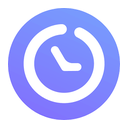 WebWork Time Tracker | Remote teams billing by the hour | Desktop app, cloud reporting | Activity scored from clicks and keystrokes |
The tools in detail
Each card uses the same three fields in the same order, so you can compare across products without relearning the layout. They appear in the same order as the list above. Each card opens with the vendor's own homepage as it looked in August 2026. Those are marketing pages, not the product interface, so treat them as a look at how each company pitches itself rather than as evidence of what the software does. To understand what any of these agents is actually doing on the device, our explainer on monitoring a computer covers the mechanics.
Time Champ
Built to cover desktop and field in one platform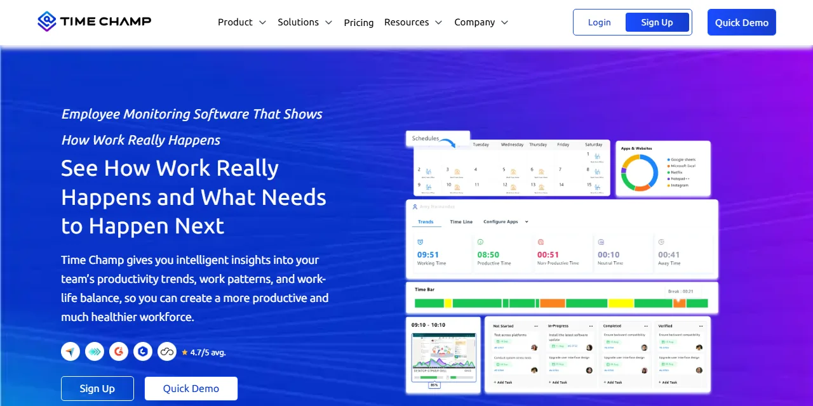
Who it is for
Time Champ is for employers who would otherwise buy two products: an activity monitor for desk staff and something separate for people working off-site. It covers desktop activity, automatic timesheets, project time, and field staff in one platform, which is the argument for it. If you only need one of those, it is more product than the question requires.
What it does
It tracks active hours, application and website use, and idle time in real time, takes automated screenshots, and records keyboard and mouse intensity alongside activity timelines. Timesheets fill themselves, and tracked time attaches to projects and tasks rather than sitting in a separate report. Field staff are covered by live location on a mobile app, and the platform adds workload signals aimed at spotting burnout, plus data loss prevention features. The vendor states GDPR, HIPAA, and ISO 27001 compliance, which is worth confirming in writing against your own obligations.
Where it is weak
Breadth is the risk. Screenshots, keyboard and mouse intensity, and live location together are close to the widest capture on this page, and the common failure is switching all of it on because it came in the box. The burnout framing only holds if the same data never feeds a ranking, and nothing about the product enforces that. Decide what stays off before anyone installs it.
Strengths
- Desk and field staff sit in one platform instead of two
- Workload signals aimed at burnout, not only at output
Limits
- Wide capture by default, so restraint has to be configured in
- Keyboard and mouse intensity is a weak proxy for real work
ActivTrak
Built for mid-sized hybrid teams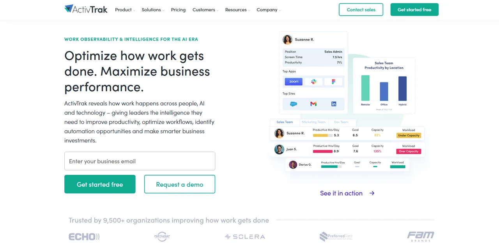
Who it is for
ActivTrak is for mid-sized companies running hybrid teams, where the real question is how a department spends its week rather than who logged in on time. It needs enough headcount for an average to mean something.
What it does
It tracks applications and websites as they are used, takes periodic screen snapshots, fires alerts when a named app or URL appears, and rolls the results into team dashboards. It also benchmarks focus time against goals and compares workload between office-based and remote staff, which is the part that justifies the department framing.
Where it is weak
The snapshot is the problem. Aggregate reporting and screen capture pull in opposite directions: one tells a manager how a department spent its week, the other tells an employee they are being watched frame by frame. The second is what decides how the rollout is received, and it can undo the goodwill the first one earns.
Strengths
- Reports at team and department level, not person by person
- Alerts catch policy breaches without anyone watching a live feed
Limits
- Screen snapshots raise the notice bar before anything else does
- Aggregates are only useful if managers stop drilling into individuals
Connecteam
Built for shift and field teams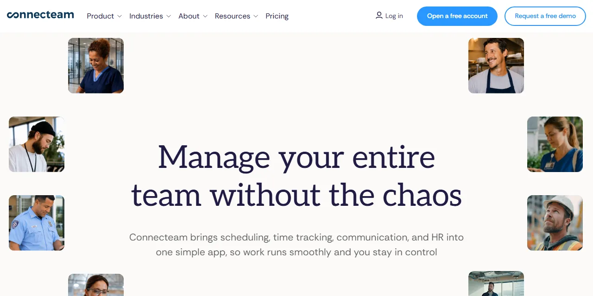
Who it is for
Connecteam is for construction, retail, and hospitality employers managing hourly staff who never sit at a company desktop. It is a workforce app first and a monitoring product second, which is a genuinely different starting point from everything else here.
What it does
Scheduling, shift attendance, task assignment with checklists and photos, digital forms for inspections and incident reports, and in-app messaging, all run from a phone. The monitoring piece is location: a movement trail recorded while a worker is clocked in, and geofencing that clocks someone out when they leave the job site.
Where it is weak
Continuous location history is the most sensitive capability on this page. It usually runs on a phone the employer does not own, and it over-collects the moment a shift ends. Buy this for the scheduling and the forms. Treat the location trail as the part you have to justify, to a workforce first and to counsel if it ever comes to that.
Strengths
- Scheduling, attendance, and job execution live in one app
- Designed around workers who have no company computer
Limits
- Location history on personal phones carries the heaviest consent burden here
- Desk-based activity reporting is not what this product is for
Controlio
Built for small business desktop visibility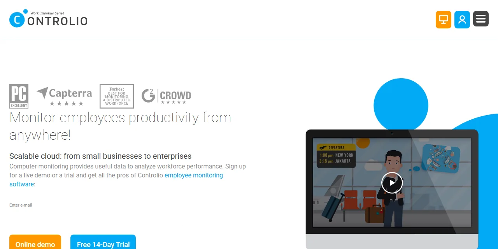
Who it is for
Controlio is for small and mid-sized businesses that want cloud-managed visibility into Windows desktops and browser activity across both remote and in-office staff, without standing up their own server to do it.
What it does
Screenshots at set intervals, a live feed of active applications and visited sites, automatic productivity scoring by person and department, and app and web time reports with filters and drill-down. Two capabilities define it: keystroke capture, sold as investigation support, and a stealth mode that hides the agent from the taskbar and the process list.
Where it is weak
This is the most invasive product on the page, and its own marketing presents that as the selling point. We disagree. Keystroke content sweeps up passwords, private messages, and medical detail that no productivity question needs, and a hidden agent turns a policy choice into a legal exposure in states with notice duties. Read the employee monitoring limits before you switch either on.
Strengths
- Current activity is visible now, not in a next-day report
- Deep app and site time breakdowns with filters and drill-down
Limits
- Keystroke capture records content, not just usage
- A hidden agent conflicts with notice duties in states that have them
DeskTime
Built for small teams with light setup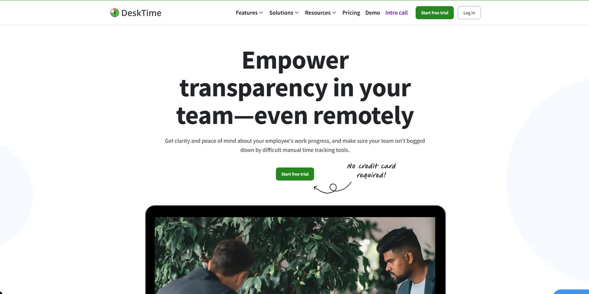
Who it is for
DeskTime is for small and mid-sized teams that want automatic time capture, productivity reporting, and basic schedule management without an IT project attached to it. Agencies billing clients by the project are the obvious fit.
What it does
It logs applications and URLs on its own, sorts them into productive, unproductive, and neutral, and scores each person from that mix. Screenshots run at set intervals. Project time sits inside the same automatic layer, so hours attach to work without anyone remembering a timer, and managers can set an hourly rate per project for client billing.
Where it is weak
Two things are poorly pinned down here, and both bite at rollout: whether screenshots can be switched off for a given team, and how offline time gets credited. Descriptions of each vary depending on where you look, which usually means the behavior depends on plan or configuration. Get written confirmation on the screenshot question before you sign, because that single answer decides how the rollout lands.
Strengths
- Accuracy does not depend on anyone's timer discipline
- Shift and absence management sit in the same product
Limits
- Offline work is the blind spot in any automatic tracker
- Whether screenshots can be turned off is genuinely unclear
Intelogos
Built for analysis rather than raw logs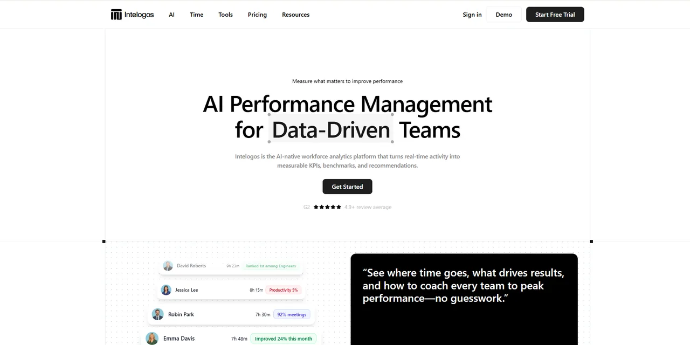
Who it is for
Intelogos is for mid-sized and growing companies that want interpretation instead of raw activity logs. It targets the manager who will never open a dashboard voluntarily and needs the software to say something first.
What it does
It tracks time, engagement, activity, and contribution, sorts apps into primary, secondary, and distracting, maps a daily timeline of tool switching, and builds custom reports across any team or period. The distinguishing layer is automated: it surfaces patterns without manual digging, flags possible burnout risk from work habits, and sends recognition back to employees rather than only upward.
Where it is weak
Mobile coverage trails desktop, and the automated analysis is not uniform across plans, so the feature that sold you may not be in the plan you are quoted. The deeper problem is conceptual: a burnout flag inferred from app and keyboard activity is a guess, not a finding, and it has no business in a personnel record.
Strengths
- Turns activity data into written recommendations managers can act on
- Recognition aimed at the employee, not only at the manager
Limits
- Mobile monitoring is less complete than desktop coverage
- No native integrations listed, so it reads one narrow signal
Monitask
Built for small and mid-sized remote teams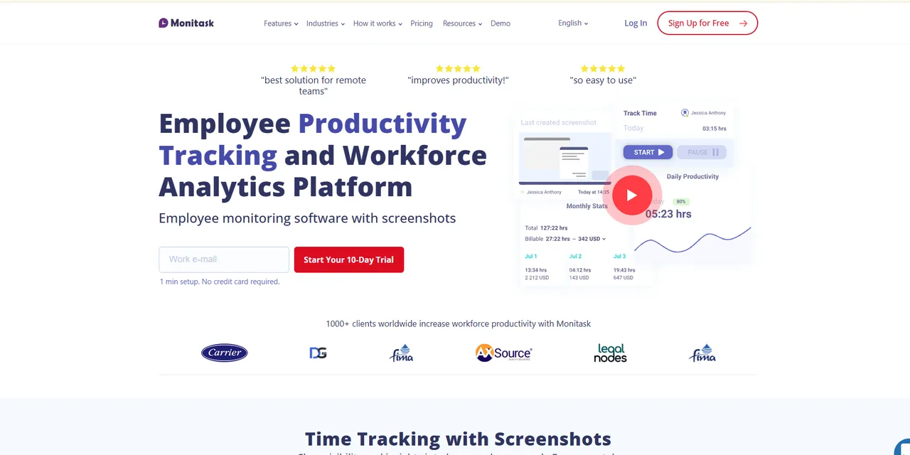
Who it is for
Monitask is for small and mid-sized businesses with remote or hybrid teams that want a plain account of how computer time went during the working day, without buying an enterprise analytics platform to get it.
What it does
It logs every application and site used during tracked hours and shows time on task visually, captures automated screenshots, gives managers a live view of current work, and records hours, breaks, and login and logout times with no manual entry. Tasks, projects, and budgets sit in the same product, and the published integration list is unusually long for a tool this size.
Where it is weak
Scope is the reservation. Timed screenshots plus a live activity feed is close to the maximum capture this category offers, and very few small teams need both switched on. Nothing in the product pushes you toward restraint, so that discipline has to come from whoever configures it.
Strengths
- Detailed app and site time data presented visually
- Tasks, budgets, and tracked time in one place
Limits
- Screenshots plus a live feed is more capture than most teams need
- Nothing in the defaults pushes you toward collecting less
Prodoscore
Built for scoring from cloud accounts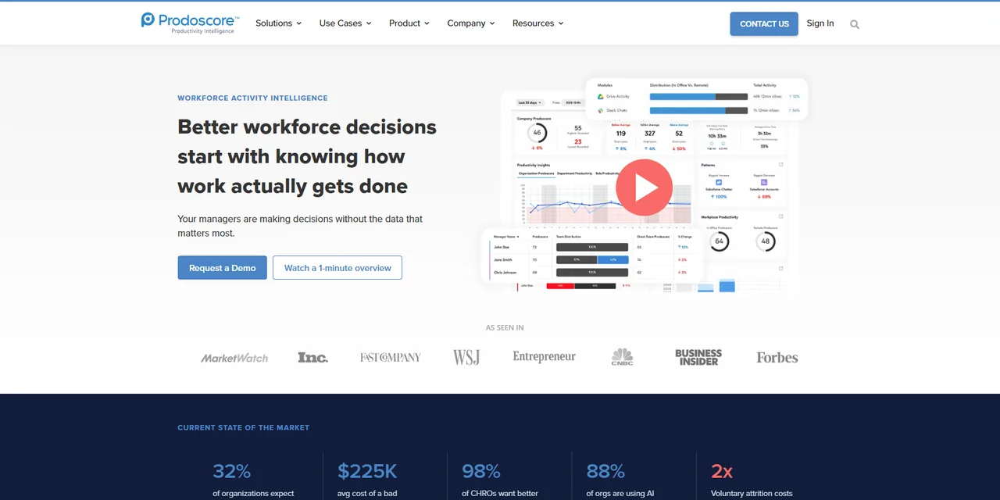
Who it is for
Prodoscore is for mid-sized and large organizations whose managers want one comparable number per person, drawn from the systems the company already runs rather than from an agent watching the desktop.
What it does
It assembles a daily score for each employee out of activity signals in company mail, calendar, chat, and sales accounts. Around that sit a coaching layer that flags score drops and suggests conversations, analysis of who collaborates with whom, reporting on which cloud tools actually get used, and a view of start times, workday length, and meeting load.
Where it is weak
There is no live screen view and no published rate card, so evaluating it means a sales call. The score itself is the bigger issue. It gets sold as objective measurement without surveillance, and it is neither. Reading mail and calendar metadata is monitoring that leaves no icon in the taskbar, and one number per person invites the ranking it claims to prevent.
Strengths
- No endpoint agent, so nothing installs on employee machines
- Coaching prompts instead of a raw activity dump
Limits
- A single daily score is easy to misuse in a review conversation
- Signal quality collapses for work done outside connected apps
Veriato
Built for regulated and security-led buyers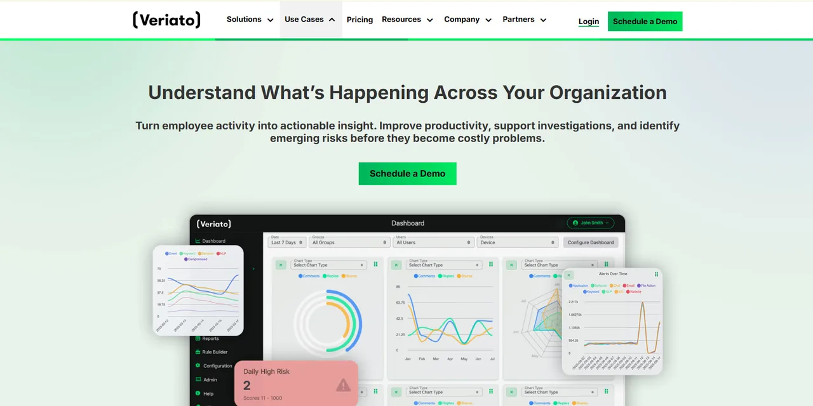
Who it is for
Veriato is for regulated employers, finance and healthcare among them, where security or compliance holds the budget rather than an operations manager. If your driving question is data leaving the building, this is the right shelf.
What it does
It tracks file activity across local, removable, and cloud storage, so downloads, renames, and copies to a USB drive leave a record. It captures screenshots triggered by flagged keywords, monitors email and chat, logs idle and active time, and raises alerts when activity crosses a risk threshold. It feeds directory services and existing data loss prevention and SIEM platforms instead of standing alone.
Where it is weak
The category itself is the caution. This is investigation tooling, much closer to user activity monitoring software than to productivity reporting. Aimed at a named risk with legal oversight it is proportionate. Aimed at a whole workforce for coaching it collects far more than the question justifies, and it stays the wrong purchase however good the product is.
Strengths
- File movement history detailed enough for a real investigation
- Fits into existing security tooling rather than duplicating it
Limits
- Keyword screenshots and message capture go further than anything else here
- The wrong instrument for measuring ordinary productivity
WebWork Time Tracker
Built for remote teams billing by the hour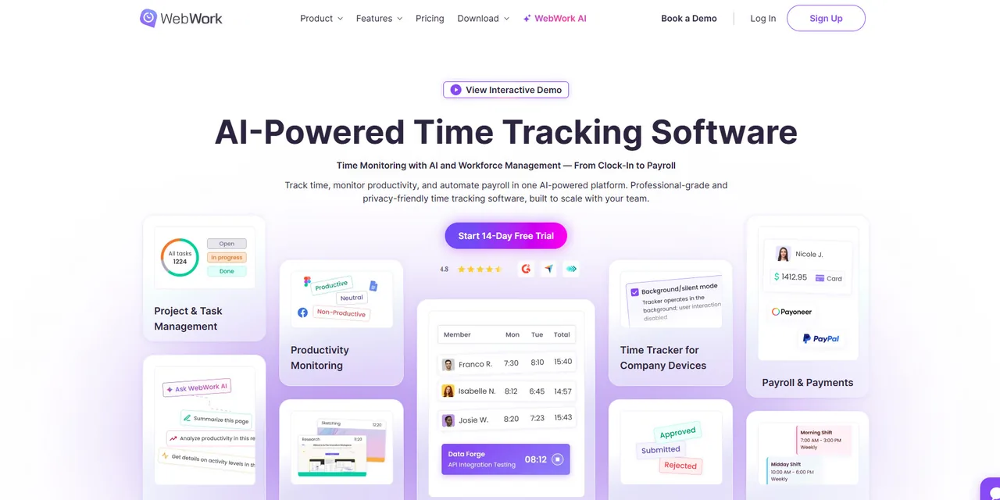
Who it is for
WebWork Time Tracker is for small and mid-sized businesses running remote or hybrid teams that need a defensible record of where working hours went, usually because someone outside the company is paying for those hours.
What it does
It captures screenshots at set intervals during tracked sessions, records check-in and check-out times into attendance reports, lets managers build and assign shifts, and attaches tracked time to projects and tasks. Apps and websites get productivity labels automatically. It also derives an activity level from mouse clicks, scrolling, and typing frequency, which is a minute-by-minute engagement reading rather than a total of logged hours.
Where it is weak
Activity scored from clicks and keystroke frequency is the weakest proxy in this category. It rewards visible motion and penalizes reading, thinking, and time on the phone, which is most of what senior work looks like. Treat that number as a curiosity rather than a performance measure.
Strengths
- Tracked time maps to projects, so an invoice has a record behind it
- Wide published integration list across project, chat, and payroll tools
Limits
- Activity scoring from clicks and keystrokes rewards motion over thought
- Interval screenshots capture people who are doing nothing wrong
What this software is called
The same product gets sold under half a dozen names, and the name usually tells you which department wrote the brief rather than what the software does. Employee monitoring software and staff monitoring programs are the HR framing. An employee tracking system or employee activity monitoring software is often the same agent described from an IT angle. Company monitoring software, workplace monitoring software, and personnel tracking software are the procurement versions of the same phrase. Computer monitoring programs, pc tracking software, and desktop tracking software describe where the agent runs rather than what it collects, and online employee monitoring software usually just means the console is cloud hosted, which is true of nearly everything on this page.
Treat all of it as vocabulary rather than specification. Two products sold under the same label can differ more than two sold under different ones. What actually separates them is four things: what gets captured, whether the person being measured can see it, where the data goes afterwards, and how long it is kept. That holds whether a vendor calls the product an employee monitor, computer tracking software, or a user tracking platform. Every question worth asking a salesperson is a version of one of those.
For the mechanics rather than the shopping list, we have explainers on desktop monitoring software, staff monitoring programs, computer screen monitoring, and employee internet monitoring.
Monitoring or productivity measurement
Employee productivity software and productivity monitoring tools sound like one category and frequently are not. Activity capture records what happened on a device. Employee productivity analytics turns that record into scores, trends, and comparisons between people or teams. Most products here claim both, but almost none are equally good at each, and the second is what managers actually open.
The distinction decides the purchase. Employee productivity tracking and activity capture answer different questions. If you are trying to find where a team's week goes, you want reporting depth and can live with light capture. If you need an activity record for client billing or an investigation, you want the reverse. Buying employee productivity tools for the first job and receiving a product built for the second is the most common mismatch in this market, and it is usually discovered after rollout. Our guide to measuring employee productivity covers the metrics, and employee productivity trackers covers where the numbers come from.
Choosing for your situation
Three situations come up more than any other, and each rules out most of the field on its own.
Small business computer monitoring
Under roughly twenty people, most of this category is oversized for the question. Small business computer monitoring almost always comes down to whether hours are accurate and whether work is getting where it needs to go, and both are answerable without screen capture. Look for products that install without an IT project, price per seat with no minimum, and let you turn features off rather than making you buy the full stack. A manager who can already name what each person did this week is buying a receipt, not information.
Stealth and hidden agents
Stealth employee monitoring software is sold as a feature, and it is the fastest way to turn a policy question into a legal one. An agent that hides from the taskbar and the process list cannot satisfy a notice requirement, and several states have one. Even where it is lawful, it is a single decision that converts every future conversation about monitoring into a conversation about trust. If you are considering it for one named individual, that is an HR and legal process rather than a software purchase. Read what monitoring should never collect before switching anything covert on.
Screen recording and screenshots
Employee screen monitoring is where this category stops feeling abstract to the people inside it. Timed screenshots are the common version and employee screen recording software is the heavier one, and both capture whatever happened to be open, including personal mail, medical portals, and bank tabs on a lunch break. If you buy a product with screenshots, decide before rollout who can view them, how long they are kept, and whether an employee can see their own. A tool that cannot answer those three questions in configuration should not be capturing screens at all.
What most comparisons leave out
Almost no comparison in this category tells you what you are legally required to do before switching a tool on. That is the most expensive omission here, because the obligation attaches to the employer, not the vendor, and no amount of careful product selection fixes it.
Take New York as the clearest example. Under New York Civil Rights Law section 52-c, an employer that monitors telephone conversations, email, or internet usage by electronic device must give prior written notice upon hiring to every employee subject to monitoring. The notice has to be in writing or electronic form, it has to be acknowledged by the employee, and a copy has to be posted conspicuously where affected employees will see it. Penalties run up to $500 for a first offense, $1,000 for a second, and $3,000 for a third and each one after that. There is an exemption for processes that manage the type or volume of email, voicemail, or internet usage solely for computer system maintenance or protection.
New York is one state. Monitoring law in the United States varies considerably, other states impose duties New York does not, and this page is not legal advice, so confirm your own obligations with counsel first. What matters for product selection is the shape of the rule. Notice has to come in advance and be acknowledged, which rules out any hidden agent, and it has to be specific, which means knowing what a product collects before you can describe it.
The second omission is what employees think of all this. Pew Research Center reported in April 2023 that 61% of US adults oppose employers using AI to track workers' movements while they work, 56% oppose keeping track of when office workers are at their desks, and 51% oppose recording what people do on their work computers. Eighty-one percent said workers would definitely or probably feel inappropriately watched if employers collected and analyzed information about how they do their jobs. The age split matters for hiring: 64% of adults aged 18 to 29 oppose tracking of work computer activity, against 38% of those 65 and over.
The third omission is what an activity score actually measures. Microsoft's Work Trend Index, published in June 2025 and based on aggregated Microsoft 365 telemetry plus a survey of 31,000 knowledge workers across 31 markets, found that people are interrupted roughly every two minutes during work hours, around 275 times a day, and that 48% of employees describe their work as chaotic and fragmented.
Every product above renders that kind of day as a poor focus score. The score is real. The conclusion most managers draw from it, that the person is not trying, is not, and no vendor dashboard will make that distinction for you. For more of the underlying figures, see our employee monitoring statistics page.
Put those three together and the conclusion is uncomfortable for a page like this one: the tool decision sits downstream of a policy decision. What you collect, what you never collect, who can see it, how long you keep it, and which decisions it may inform are questions you answer before a shortlist means anything. Write the employee monitoring policy first, then buy the product that fits it. Doing it the other way around means the software's default settings become your policy by accident.
How to evaluate these yourself
Since you should not take our word for any of this, here is the evaluation we would run before signing for any employee monitoring system, in order. It puts the parts most likely to fail first, which is the opposite of how a vendor demo is sequenced.
- Write the policy before the shortlist. One page: what is collected, what is never collected, who can view it, how long it is kept, and the decisions it may inform. Have counsel review it. Any product that cannot be configured to match that page is eliminated without a trial, which usually halves the list.
- Install on volunteers only, starting with the managers who asked for it. The people who want the visibility should be the first ones monitored, on their own machines, for the whole trial. Never quietly pilot on a team that has not been told. If managers object to being included, that objection is your finding.
- Ask the vendor in writing, and keep the reply. Can the agent run hidden, and can that be disabled permanently at the account level? Is keystroke content ever captured? Who at the vendor can view our data, where is it stored, which subprocessors touch it, what is the default retention, and what happens if we cancel? A vendor that will not answer in writing has answered.
- Test export and deletion before you test any feature. Export the complete record for one person, open it, and read it as though it were about you. That exercise settles more internal arguments than any dashboard. Then request deletion of that person's data and verify it is gone, from reports as well as the main view.
- Run it at least three weeks, and include a bad week. Two smooth weeks teach you nothing. You want a release crunch, a sick child, a day of back-to-back meetings, so you can see how the product represents a disrupted human week and whether the report would survive being shown to the person it describes.
- Compare the output against what you already knew. Write down your assessment of each volunteer's month before you open the data. If the tool only confirms what you knew, you have bought an expensive receipt. If it contradicts you, work out which of the two is wrong before anyone acts on it.
When the right answer is to buy nothing
Buy nothing if you cannot name the decision the data will change. Buy nothing if the real goal is building a case against one named person, because that is an HR and legal process rather than a software purchase, and a workforce-wide rollout to get there is disproportionate and discoverable later. Buy nothing if the outcome you care about is output you could measure directly, since counting the work beats counting the activity around it.
Key takeaways
- The right tool depends on the question you are answering. A shift scheduler, a desktop activity agent, and a security investigation platform are all sold under this one search term.
- These ten cover the shapes the market comes in, but the shortlist you actually trial should be two or three, chosen by deployment model rather than by feature count.
- Every product here carries a real tradeoff. Any comparison showing none for a given tool has stopped looking rather than found a flawless product.
- Notice comes first. New York requires prior written notice, acknowledged and posted, and rules differ by state, so a covert agent is a legal problem before it is an ethical one.
- Survey data shows majority opposition to the most common capabilities, and opposition is strongest among the youngest workers you are trying to hire.
- Test export, deletion, and one bad week. Those checks eliminate more products than any feature comparison.
Frequently asked questions
What is the best employee monitoring software?
There is no single best one, and any page naming a winner is describing its own scoring method rather than your situation. These ten solve genuinely different problems: shift scheduling, desktop activity reporting, and security investigation are not the same purchase. Pick by the question you are trying to answer, then run your own trial.
How was this list put together?
We assessed each product against the job it is built for, what it captures by default, and how that lands with the people being measured. We take no vendor money, run no affiliate links, and accept nothing for placement, so no position here is paid. We have not installed these agents on anyone's workforce, which is why the page ends with a protocol for running your own trial rather than a hands-on verdict.
Why does this page not list any prices?
Because rates here move, and most vendors quote by seat count and contract length rather than a flat list price. Figures printed in comparisons are usually accurate when written and quietly wrong months later. The vendor's own billing page is the only current source, so check there and get the quote in writing before you commit.
Is employee monitoring legal in the United States?
Monitoring company equipment is broadly permitted, with conditions that vary a great deal by state. New York Civil Rights Law section 52-c requires prior written notice on hiring, acknowledged by the employee, plus a conspicuously posted notice. Confirm your own obligations with counsel before deployment.
Do I have to tell employees they are being monitored?
In New York, yes, and the notice must be acknowledged and posted. Requirements differ elsewhere, so check with counsel. Separately from the law, covert monitoring tends to cost more in trust than it recovers in insight, and it is very hard to explain after the fact.
What do employees actually think about being monitored?
Pew Research Center found in April 2023 that 61 percent of US adults oppose employers using AI to track workers movements while they work, and 51 percent oppose recording what people do on their work computers. 81 percent said workers would definitely or probably feel inappropriately watched.
Is a free trial enough to judge one of these tools?
Only if you test the unglamorous parts. Run it for at least three weeks on volunteers, export one persons full record and read it as if it were yours, then request deletion and confirm it happened. Feature demos rarely fail. Export and deletion often do.
What is the difference between employee monitoring and user activity monitoring?
They overlap, but they come from different places. User activity monitoring grew out of insider risk and security investigation, so it is built to produce evidence. Productivity monitoring grew out of time tracking and is built to produce reports. The same data collected for different reasons.
Can these tools tell me whether someone is productive?
They can tell you what an account did, not what a person achieved. Microsoft research published in June 2025 found knowledge workers were interrupted roughly every two minutes during work hours. A low activity score often records a fragmented day rather than a disengaged employee.